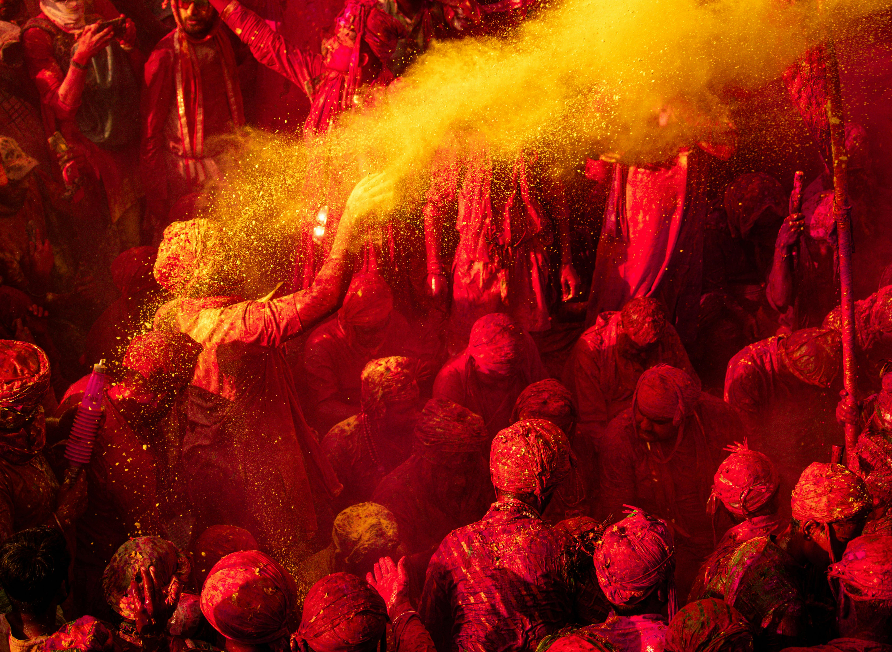
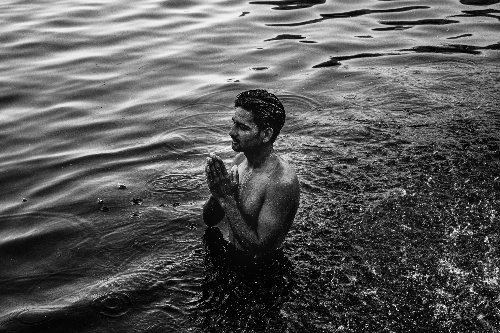

Uttar Pradesh
Uttar Pradesh, known for its rich history, culture, and the Taj Mahal, is a state that offers a vibrant blend of heritage and modernity.

Varanasi
Varanasi, the spiritual capital of India, is famous for its ghats, temples, and ancient culture along the banks of the Ganges.

Agra
Agra, home to the iconic Taj Mahal, is a must-visit for anyone interested in Mughal architecture and history.
1. Popular Tourist Attractions
Historical and Cultural Landmarks
- Taj Mahal (Agra): One of the Seven Wonders of the World, the Taj Mahal is a symbol of eternal love and an architectural masterpiece.
- Varanasi: The city of temples and ghats, Varanasi is a spiritual hub where you can witness the daily rituals on the banks of the Ganges.
- Fatehpur Sikri: A UNESCO World Heritage site, this Mughal city is known for its rich architectural heritage and historical significance.
Temples and Religious Sites
- Kashi Vishwanath Temple: One of the most revered Hindu temples in Varanasi, dedicated to Lord Shiva.
- Mathura and Vrindavan: The birthplaces of Lord Krishna, these towns are important pilgrimage destinations in India.
- Allahabad (Prayagraj): Known for the confluence of three sacred rivers, the Ganges, Yamuna, and Saraswati, and for the Kumbh Mela festival.
Natural Beauty and Gardens
- National Chambal Sanctuary: A protected area for crocodiles and other wildlife, offering boat safaris and nature walks.
- Lucknow: Known for its gardens, especially the Bara Imambara and the Chota Imambara.
- Keoladeo National Park (Bharatpur): A UNESCO World Heritage site, this park is famous for birdwatching and a variety of species.
Royal Palaces and Forts
- Allahabad Fort: A grand fort built by the Mughal emperor Akbar, located near the confluence of the Ganges and Yamuna rivers.
- Ramnagar Fort: A historic fort situated on the banks of the Ganges in Varanasi, known for its architecture and history.
2. Cuisine
- Chaat: A variety of street food, including Pani Puri, Samosa Chaat, and Aloo Tikki, which are famous in cities like Lucknow and Varanasi.
- Lucknawi Biryani: A special rice dish with spices, meat, and vegetables, famous in Lucknow.
- Prayag Raj's Tandoori Chicken: A grilled chicken dish marinated in yogurt and spices, cooked to perfection.
3. Festivals
- Kumbh Mela: Held once every 12 years in Allahabad, this is the largest religious gathering in the world, attracting millions of pilgrims.
- Diwali: Celebrated with great enthusiasm throughout the state, especially in Ayodhya, where Lord Ram is believed to have returned.
- Holi: The festival of colors, celebrated with great zeal in Mathura and Vrindavan.
- Eid-ul-Fitr: Celebrated with grand feasts and prayers, especially in cities like Lucknow.
4. Unique Experiences
- Boat Ride on the Ganges: Experience the spiritual essence of Varanasi by taking a boat ride on the sacred river.
- Exploring Agra's Mughal Heritage: Visit the Taj Mahal, Agra Fort, and Fatehpur Sikri to learn about the rich Mughal history.
- Shopping in Lucknow: Known for its traditional Chikan embroidery, Lucknow is a great place for buying beautiful handicrafts.